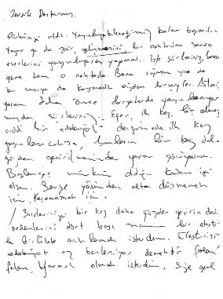
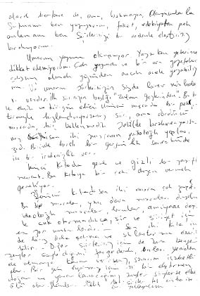

MAVERA
Aylık Edebiyat Dergisi
Kızılay, Bayındır s. 30/C
ANKARA
Ankara, 24.3.1979
Sevgili Dostumuz,
Şiirlerinizi aldık. Yayınlayabileceğimiz kadar başarılı. Yazar ya da şair, gelişmesini bir noktadan sonra eserlerini yayımlayarak yapmalı. İşte şiirleriniz bana göre tam o noktada. Buna rağmen yine de bu sayıya da koymadık sizden bir şeyler. Bilmiyorum daha önce bir yerlerde yayımlanıyor muydu şiirleriniz? Eğer, ilk kez, hiç olmazsa ciddi bir edebiyat dergisinde yayınlanacaksa, bunların bir kez daha gözden geçirilmesinde yarar görüyorum. Başlangıç, mümkün olduğu kadar iyi olsun. Seviye yönünden alta düşmemek için. Kaçamamak için.
Şiirlerinizi bir kez daha gözden geçirin dedim. Nedenlerini dört başı mamur bir eleştiriyle birlikte açıklamak isterdim. Eleştirisiz edebiyat az besleniyor demektir falan filan. Yararlı olmak isterdim, size genel olarak herkese de, ama bakmayın Okuyucularla sütununu ben yazıyorum, fakat edebiyattan pek anlamam ben. Şiirlerinizi bu nedenle eleştirisiz bırakıyorum.
Umarım yazım okunuyor. Yazarken yeterine dikkat edemiyorum. Çok yazmak ve bir ara gazetelerde çalışmış olmam yüzünden ancak acele yazabiliyorum. Ve umarım şiirlerinizin sizde birer nüshaları vardır. İlk şiirinizin başlığı “Zulmü Gözlerinden”. Bu başlık eksik ve tedirgin edici. Üçüncü mısrada bir pekiştirmeyle tedirgin ediyorsunuz şiiri, ama dördüncü mısrada hiç beklenmedik şekilde bırakıveriyorsunuz. Yani son iki mısranın psikolojik yapıları zıd. Birinde hırslı bir gerginlik sonrakinde ise bir iradesizlik var.
İkinci kıtada genel ve gizli bir zayıflık mevcut. Bu kıtaya bir çekidüzen vermek gerekiyor.
Üçüncü kıtada son iki mısra çok zayıf. Bu tip mısralar, yani dava mısraları diyelim. İdeolojik mısralar bunlar, amiyane deyimle cuk oturmadıkça, şiir ve şiiriyet için en zor unsurlardır. Son iki kıta için de biraz daha çalışma ve sıklaştırma önerilebilir.
Diğer şiirlerin için de buna benzer şeyler söylediğimi farz ederek onları yeniden ele almaya karar verirseniz sanırım isabetli olur. Bir gün hepimiz için iyi bir eleştirmen doğar ve yararlanabileceğimiz şeyler söylerse elbet âlâ olur.
Selamlar..
Cahit
Not: Şiirler tek nüsha ise onları yollayayım.